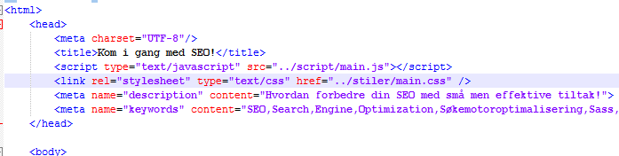
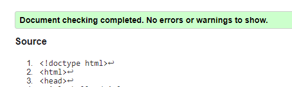

Sørg for at forsiden du lagde i oppgave 1 tar høyde for de tiltakene du nevner om SEO i oppgave 2.1, 2.2 og 2.3. Vis spesifikt tiltak du har gjort ved eksempler på siden "Analyse" fra oppgave 2.4.
Tiltak for å forbedre min SEO
Det første tiltaket jeg gjorde var å putte inn en tittel på siden som samsvarte med innholdet, og også lot seg lett bli funnet på en søkemotor.
Her ser vi hvordan en bruker to forskellige meta'er for å gi crawlerne beskjed om hva som skal vises om dem dukker opp i søkemotoren. De som står i description er det som vil vises under tittelen. Keywordsa er bare en hjelpepinne på hva som finnes på siden. Disse meta'ene er veldig lurt å holde oppadert til hver enkel side, slik at det blir lettere å spisse inn hvilken siden brukeren skal søke seg til.

Et annen tiltak jeg bruker er å holde koden semantisk riktig. Min måte å gjøre dette på er å bruke main, aside, nav, header, footer og disse taggene på rikitg plass. Jeg bruker kun div'er og span til punkter det der ikke egner seg å bruke noen av dem andre taggene. Som f.eks. til full background bilde er det fint å kunne bruke en mindre synlig div.
Og sist men ikke minst så validerer jeg alltid sidene før jeg sier meg ferdig med dem. Her valideres det HTML og også CSS. Legger med linkene jeg bruker for å validere.
| HTML Validator | CSS Validator |
|---|---|
| W3 HTML Validator | W3 Jigsaw CSS Validator |